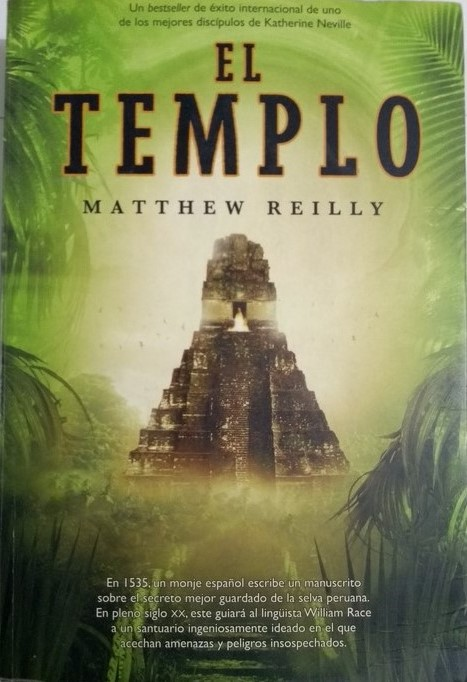

El templo
En la selva de Perú la contienda del siglo ha comenzado. Se está librando una carrera contra el tiempo para encontrar un legendario ídolo inca que fue tallado en una piedra que, en la actualidad, podría utilizarse para desarrollar un arma secreta aterradora y letal.
La única pista para dar con el ídolo se encuentra en un manuscrito escrito por un monje español en el siglo XVI. William Race, un joven y brillante lingüista, es reclutado para interpretar el documento que podría conducir a un equipo militar estadounidense hasta el ídolo.
Matthew Reilly